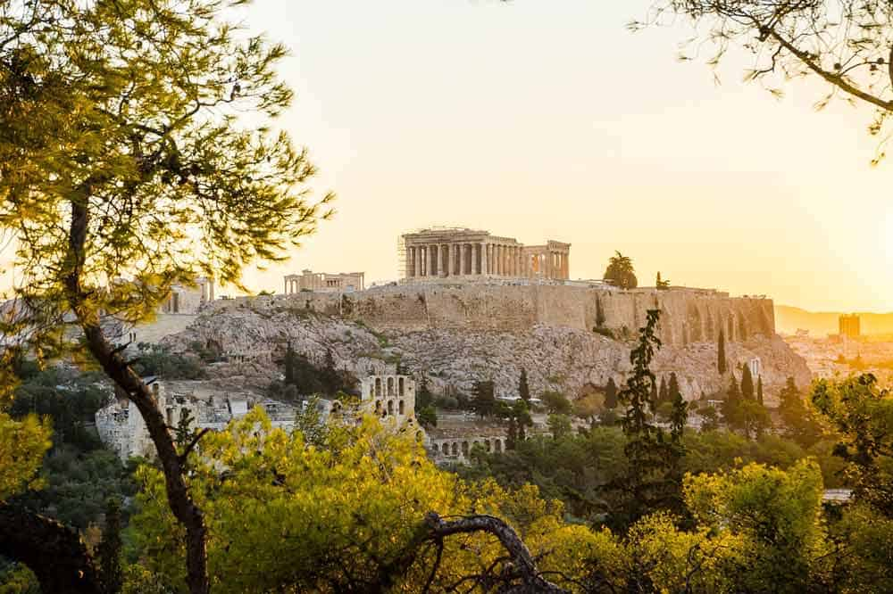
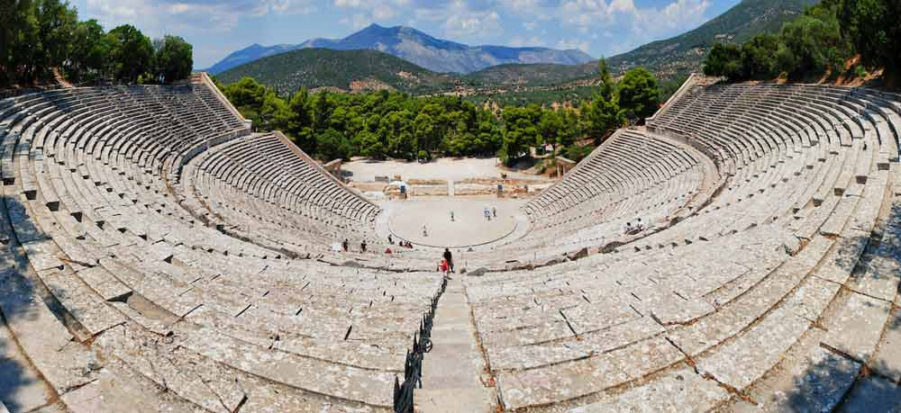
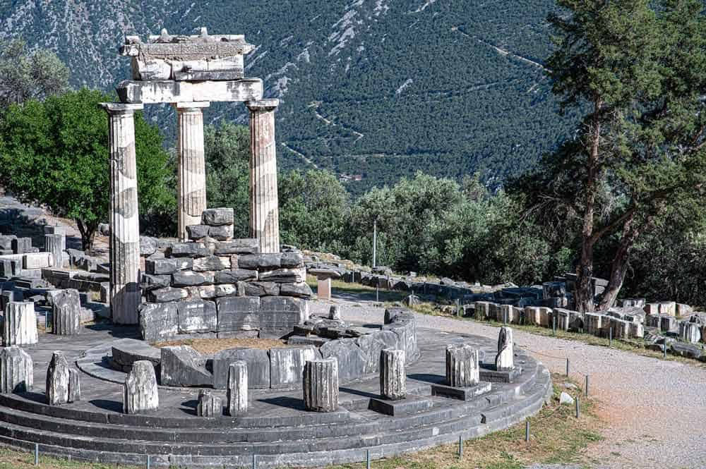
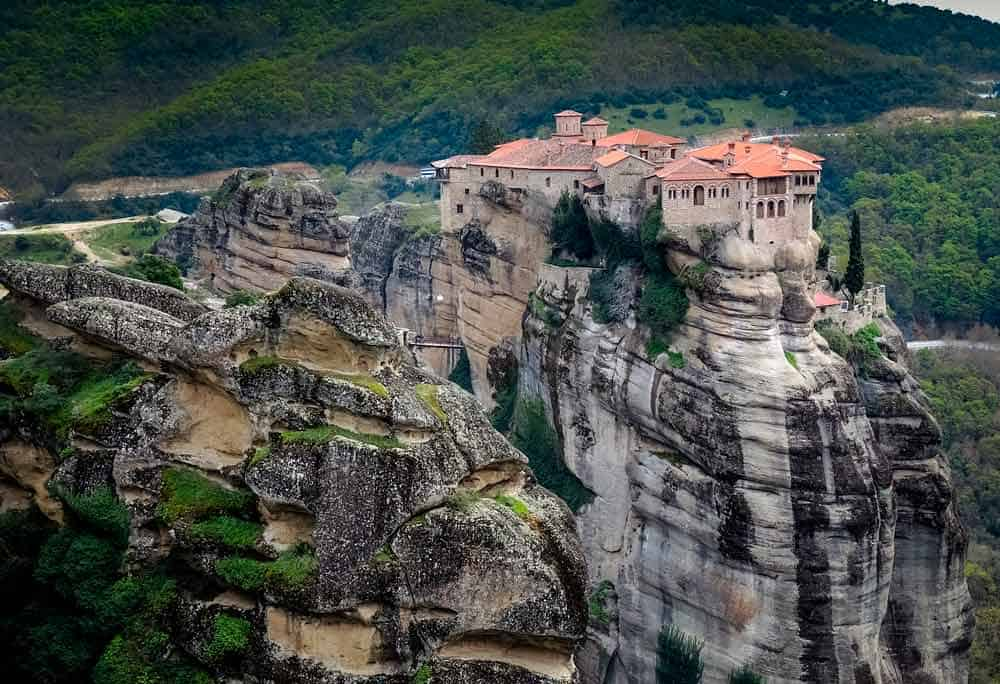

Descubre la maravilla de viajar por el mundo. ¡Haz clic para obtener más información!
Grecia es Atenas, posiblemente una de las ciudades más fascinantes del mundo, pero también es Delfos, Corinto, Micenas, Epidauro, Olimpia,
y un sin fin de islas a cada cual más bonita.
Atractivos Turísticos
-
Santorini
-
Atenas
 -
El Peloponeso
 -
Delfos y su Oráculo
 -
Monasterios de Meteora

Itinerario
Día 1:
Atenas, se merece un viaje para ella sola, nunca debería faltar en cualquier viaje a Grecia.
Día 2:
El Peloponeso, nos sumergiremos en la historia del país heleno y viajaremos desde el siglo XVII a.C. hasta nuestros días.
Día 3:
Delfos y su Oráculo, igual que atrajo a miles de personas hace casi 3.000 años hoy lo sigue haciendo con visitantes de todo el planeta.
Día 4:
Santorini, te cautivará por el ambiente con las casas blancas con cúpulas azules.
Día 5:
Los monasterios de Meteora, flotando en las alturas dibujan uno de los paisajes más singulares y llamativos del mundo.